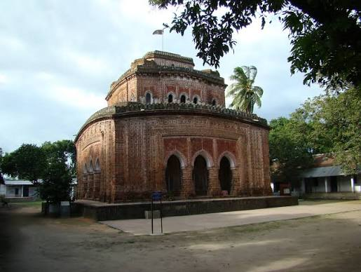
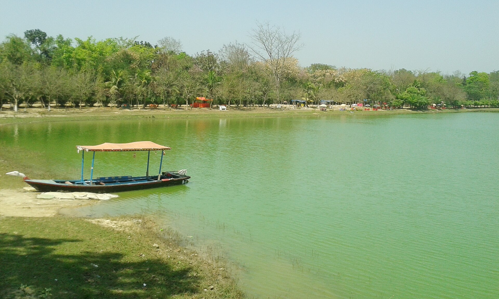
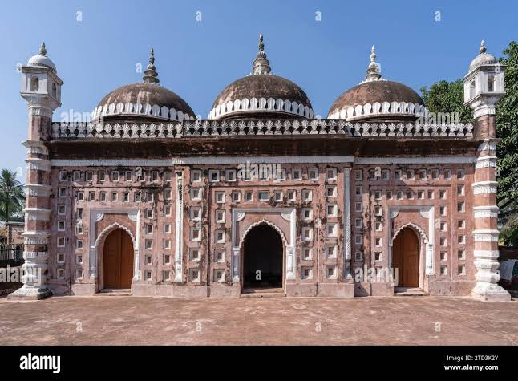
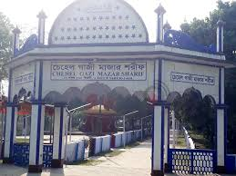
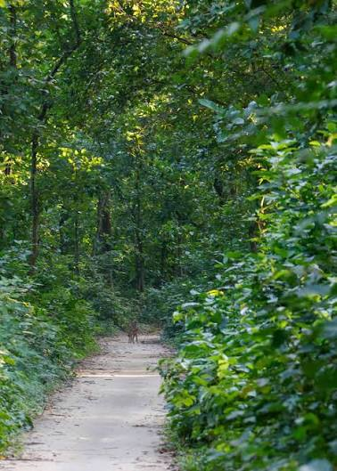
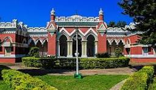
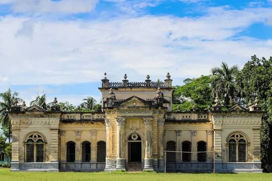
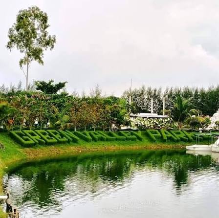

দিনাজপুর জেলার অন্যতম বিখ্যাত ঐতিহাসিক ও ধর্মীয় স্থাপনা। মন্দিরটির টেরাকোটা নকশা ও কারুকাজ বাংলাদেশের সাংস্কৃতিক ঐতিহ্যের গুরুত্বপূর্ণ অংশ।
📍 Google Maps
বাংলাদেশের বৃহত্তম মানবসৃষ্ট দীঘি। পরিবার, শিশু এবং প্রকৃতিপ্রেমীদের জন্য অত্যন্ত জনপ্রিয় ভ্রমণ স্থান।
📍 Google Mapsদিনাজপুর শহরের উত্তর-পূর্বে রাজারামপুর গ্রামে অবস্থিত। রাজবংশের ঐতিহাসিক স্মৃতিবাহী স্থাপনা — কুমারমহল, আয়নামহল, রানিমহল ও ঠাকুরঘরসহ অনেক প্রাচীন ভবন এখনো দাঁড়িয়ে আছে।
📍 Google Maps
১৭৯৩ সালে নির্মিত, মোগল সম্রাট শাহ আলম দ্বিতীয়ের শাসনামলে। কান্তজিউ মন্দিরের কাছেই অবস্থিত। দেয়ালে টেরাকোটা ফলক দিয়ে অলংকৃত।
📍 Google Maps
দিনাজপুর সদর উপজেলার চেহেলগাজী ইউনিয়নে অবস্থিত। সুফি সাধক চেহেলগাজীকে ঘিরে গড়া ধর্মীয় স্থান, যা পবিত্রতা ও ইতিহাসের মিশ্রণ।
📍 Google Maps
দিনাজপুরের প্রাকৃতিক বনাঞ্চল, যা শাল-সেগুন গাছের জন্য পরিচিত। প্রকৃতিপ্রেমী ও পাখিপ্রেমীদের জন্য আদর্শ ভ্রমণ স্থান।
📍 Google Maps
নাটোর শহর থেকে ৩ কিমি উত্তরে দিঘাপতিয়ায় অবস্থিত। ইতালীয় স্থাপত্যশৈলীর অনন্য নিদর্শন, ৪১ একর জমির উপর বিস্তৃত। পূর্বে দিঘাপতিয়া রাজবাড়ি নামে পরিচিত ছিল।
📍 Google Maps
নাটোর শহরের জিরো পয়েন্ট থেকে ১ কিমি উত্তরে পরিখাবেষ্টিত রাজবাড়ি। বাংলার সুবেদার মুর্শিদকুলী খানের শাসনামলে প্রতিষ্ঠিত। রানী ভবানীর রাজবাড়ি নামেও পরিচিত।
📍 Google Mapsনাটোরের সিংড়া উপজেলায় অবস্থিত বাংলাদেশের বৃহত্তম বিল। শস্যলমণ্ডিত এই বিল ঈদের ছুটিতে পর্যটকদের জন্য অন্যতম আকর্ষণ।
📍 Google Mapsনলডাঙ্গা উপজেলায় অবস্থিত, যা "মিনি কক্সবাজার" নামে পরিচিত। প্রাকৃতিক সৌন্দর্যের জন্য জনপ্রিয় ভ্রমণ স্থান।
📍 Google Maps
নাটোরের লালপুরে অবস্থিত আধুনিক স্থাপত্যে সাজানো পার্ক। পরিবার ও শিশুদের জন্য বিনোদনের আদর্শ স্থান।
📍 Google Maps📍 Noor Tower, Lili More, Munshipara, Dinajpur
🚉 Dinajpur Railway Station থেকে প্রায় ৫ মিনিট
📍 Housing Mor, Dinajpur
📍 Boro Horishpur Bypass, Natore
🚉 Natore Railway Station থেকে প্রায় ৫-৬ কিমি
📍 Station Bazar Road, Natore
🚉 Natore Railway Station-এর পাশেই
| হোটেল | রুম | ভাড়া (প্রতি রাত) | রেটিং |
|---|---|---|---|
| Hotel Grand Noor | Deluxe Twin | ৳5,000 | ★★★★★ |
| Hotel Comfort Inn | Deluxe Triple | ৳3,500 | ★★★★☆ |
| Parjatan Motel | AC Deluxe | ৳3,200 | ★★★★☆ |
| VIP Hotel Natore | Double AC | ৳1,500 - ৳2,000+ | ★★★★☆ |
| Hotel Prince Natore | Triple AC | ৳1,800 | ★★★☆☆ |
✅ দিনাজপুর: Hotel Grand Noor
✅ নাটোর: VIP Hotel Natore
✅ বাজেট ট্রিপ: Hotel Prince Natore
পরিবার, নিরাপত্তা, অবস্থান, সুবিধা এবং ভ্রমণকারীদের মতামত বিবেচনায় Hotel Grand Noor এবং VIP Hotel Natore সবচেয়ে উপযুক্ত বিকল্প।